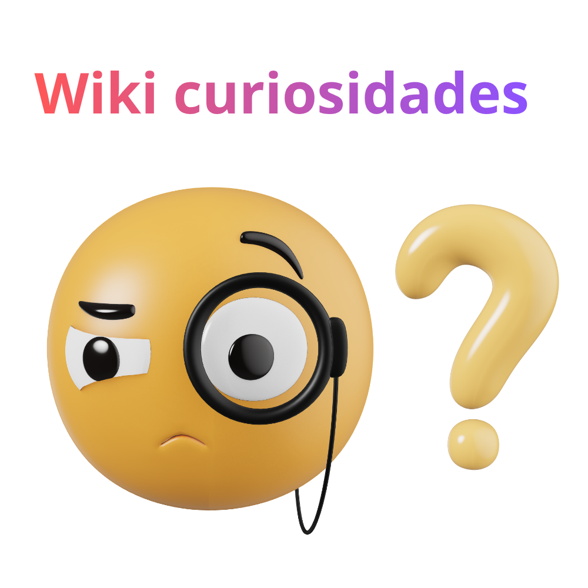

Wiki Curiosidades
Feito por: Isaac Lima
CURIOSIDADES:
1. Pesquisas apontam que as mulheres costumam lembrar mais dos sonhos do que os homens.
2. Por que lugares altos são mais frios?
3. Um dia em Vênus é mais longo que um ano em Vênus
Calculadora(caso queira usar)